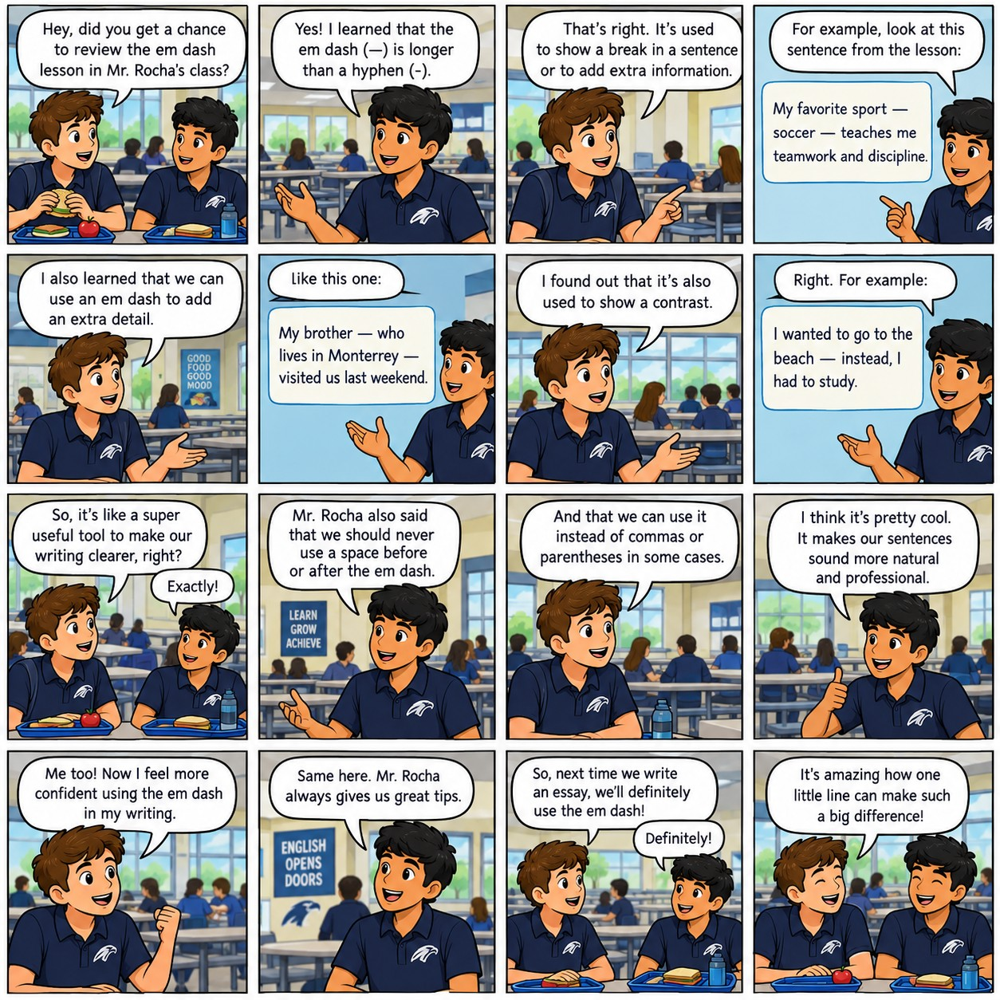

Please enter your details before beginning the worksheet.
Introduction
Welcome to the interactive worksheet. Please progress through the activities using the buttons below.

Activity 1: Video Analysis
Instructions: Watch the video. Take notes and tell Mr. Rocha what the video was about.
Video1.mp4 not found.
(Place Video1.mp4 in the same folder)
Activity 2: Reading Comprehension
High-Stakes Testing: Measurement, Opportunity, and Pressure
High-stakes tests influence decisions that can alter a student’s future: university admission, scholarship eligibility, course placement, and access to international study. Supporters argue that standardized examinations provide a common yardstick; critics reply that a single score can never capture curiosity, perseverance, creativity, or the quality of a student’s education. The central dilemma is clear: institutions need comparable evidence, yet students deserve to be judged as more than numbers.
In the United States, the SAT and ACT are widely recognized college-admission tests. The digital SAT has two sections—Reading and Writing, and Math—and uses a multistage adaptive design. Performance on the first module helps determine the difficulty of the second; consequently, two candidates may encounter different questions while still being assessed on the same scale. The ACT, by contrast, has three core sections: English, Mathematics, and Reading (Science and Writing are optional). Its faster pace can reward efficient decision-making, whereas the SAT’s adaptive structure may suit students who are comfortable navigating a digital environment.
The TOEFL iBT serves a different purpose: it evaluates academic English for people who may study in an English-medium institution. It assesses four skills—Reading, Listening, Speaking, and Writing—and reports section results as well as an overall score. Universities set their own requirements; therefore, there is no universal “pass” mark. A strong result may demonstrate readiness, but it does not guarantee that a student will participate confidently in seminars, understand every regional accent, or write sophisticated research papers.
High-stakes testing can promote consistency across schools and countries; nevertheless, it can also magnify inequality. Affluent candidates may purchase tutoring, repeated registrations, and extensive practice materials, while others rely on limited school resources. Even the test-day window—often only two–three hours—may privilege speed over reflection. Anxiety, illness, unfamiliar technology, and noisy conditions can also distort performance.
Preparation should therefore be strategic rather than obsessive. Students should first identify the examination’s demands: content, timing, question types, and scoring rules. They can then practise under realistic conditions; analyse errors; and build durable skills instead of memorising tricks. As one useful principle states, “A score is evidence, not identity.” Schools and universities should adopt the same perspective. Test results may inform a decision, but they should be considered alongside grades, writing samples, recommendations, opportunities, and personal context.
Ultimately, high-stakes tests are neither perfectly objective nor entirely useless—they are limited instruments. Used cautiously, they can contribute valuable information; used mechanically, they can narrow education and misrepresent potential. The fairest system is one in which scores open a conversation rather than end it.
Instructions: Select the best answer for each question based on the text.
Activity 3: The Em Dash Masterclass
C1 Level Guide: The Em Dash (—)
The em dash is a highly versatile punctuation mark used in sophisticated English (C1/C2) to create strong emphasis, signal an abrupt interruption, or insert parenthetical information with more prominence than commas or parentheses.
- Emphasis / Apposition: It replaces commas to draw extreme attention to an inserted detail. Ex: The new policy—implemented after fierce debate—will change everything.
- Conclusion / Summary: It can replace a colon to introduce an explanation or summary with more dramatic flair. Ex: She lacked the one thing necessary for the expedition—courage.
- Interruption: Often used in dialogue to show a break in thought. Ex: "I was thinking that we could—" he started, before the alarm rang.
Note: The prompt instructed inserting a "colon" in this Em Dash exercise. To balance this, some sentences require an Em Dash (—), and some require a Colon (:). Read carefully!
Instructions: Rewrite the sentences below, inserting either an Em Dash (—) or a Colon (:) exactly where the [MARK] placeholder is. You can use the buttons below the input to insert the symbols.
Activity 4: Syntax Assembly
Instructions: Drag and drop the words into the correct order to form complete C1-level sentences containing em dashes. Click the speaker icon to hear the sentence.
Activity 5: Cohesion and Coherence
Instructions: Drag and drop the 5 missing sentences into the correct gaps in the text below.
Sentences to Place:
Activity 6: Dictation & Listening Comprehension
Instructions: Listen to the audio track. Every 12th word is missing from the text. Type the missing words into the boxes.
Activity 7: Visual Conclusion
Review the final diagram outlining punctuation hierarchy.

You have reached the end of the activities.